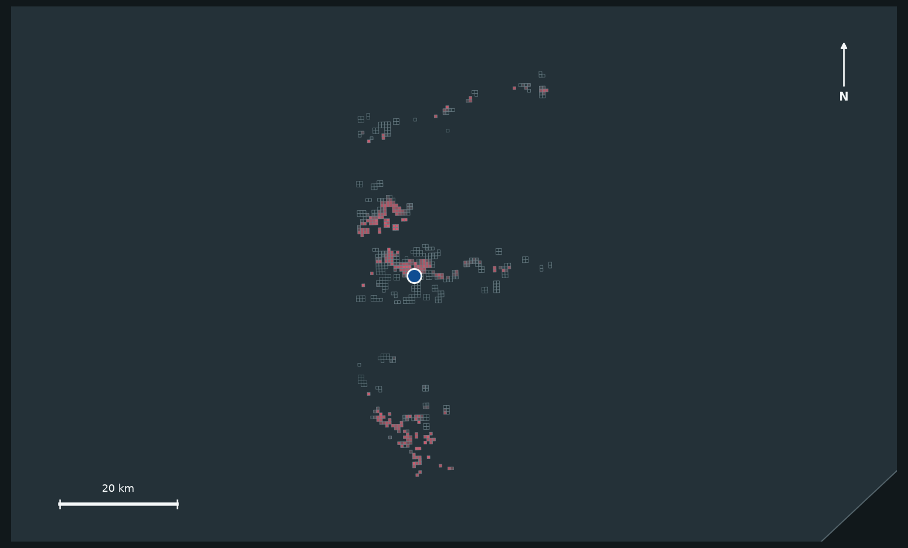

01 · Research question
Visible damage is evidence. It is not the whole decision.
If a post-disaster AI uses only remote-sensing damage to rank recovery priority, does it systematically omit places selected when population exposure, road access, critical services, and urban form are also inspected?
02 · Event atlas
One audit, four distinct urban contexts
Select an event to inspect its own 500 m footprint, damage pattern, and evidence state.

Hurricane Harvey
29.748° N · 95.580° W
- Buildings
- 23,014
- 500 m cells
- 612
- Percentile diagnostic
- 49
- Exact top-20%
- 52
- Cross-definition robust
- 0
- Temporal support
- 0
Provisional disagreement remains visible, but no cell passes every fixed cross-definition gate.
03 · Study overview
Geography, scale, and evidence in one frame
The same graphical overview appears in the English paper and Chinese competition report.

04 · Cross-scale explorer
Same place. Different analytical support.
These are independently reconstructed grids around the same real Mexico candidate,
mexico-earthquake_500m_3_38.
Empty mesh cells contain no xBD building labels; shaded cells entered the analysis.
The candidate area does not meet the common two-population-product support gate at 250 m.

05 · Audit framework
Disagreement must survive fixed evidence gates
The framework compares rankings; it never converts a scenario score into a ground-truth need label.
NFIP, SVI, and IHP remain outside this funnel. Their results are reported as mixed, construct-specific external evidence.
06 · Evidence
The strongest result is the narrowing
Open a figure for a larger view. Every chart is generated from frozen derived tables.


07 · Validity boundary
A useful audit is honest about what remains unknown.
Damage-only and multi-source rankings can diverge, and the apparent signal is sensitive to policy weights, population resolution, spatial scale, and map time.
The analysis does not identify actual unmet need, causal urban-form mechanisms, or an ethically correct rescue and recovery allocation.
Use robust disagreements as locations for human review and additional local evidence, not as automatic dispatch instructions.
08 · Open reproduction
Trace every number back to data, code, config, and log.
The public repository contains the core analysis, fixed configs, evidence manifests, and one-command reproduction entry point. Raw xBD imagery is not redistributed.
git clone https://github.com/Ireliya/auto-city-research.git
cd auto-city-research
conda env create -f configs/environment_city.yml
conda activate city
python scripts/reproduce_core.py --profile finalExpected fixed totals: 73 percentile, 115 exact top-20%, 4 non-temporal robust, 0 temporal support.